SpringBoot是如何做到零配置的
SpringBoot是如何做到零配置的/自己实现一个
SpringBoot是如何把SpringMVC的这些配置去掉的?
原本SpringMVC的web.xml 注册了Spring,
作用有2
初始化applicationContext.xml的配置 ，这个xml主要配置了包扫描路径
springmvc的spring-mvc.xml 配置注册了dispatcherServlet
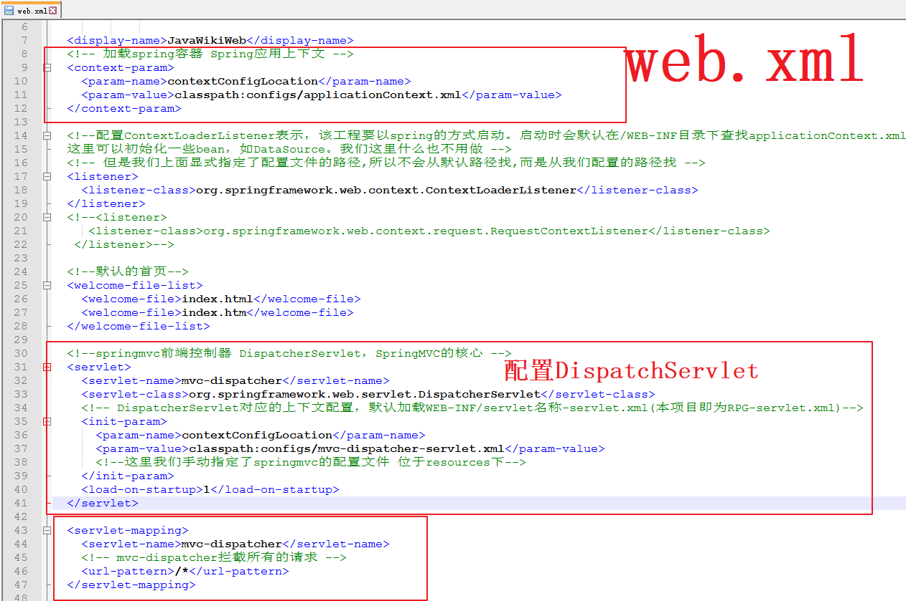
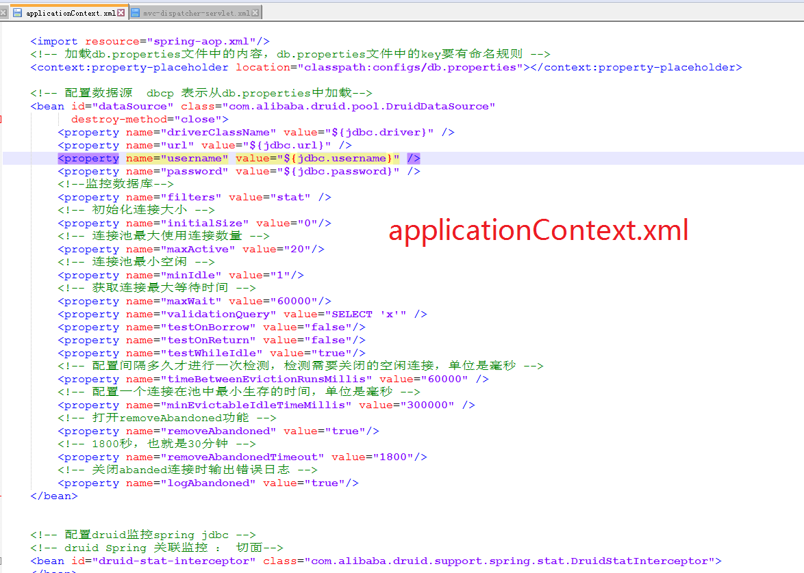
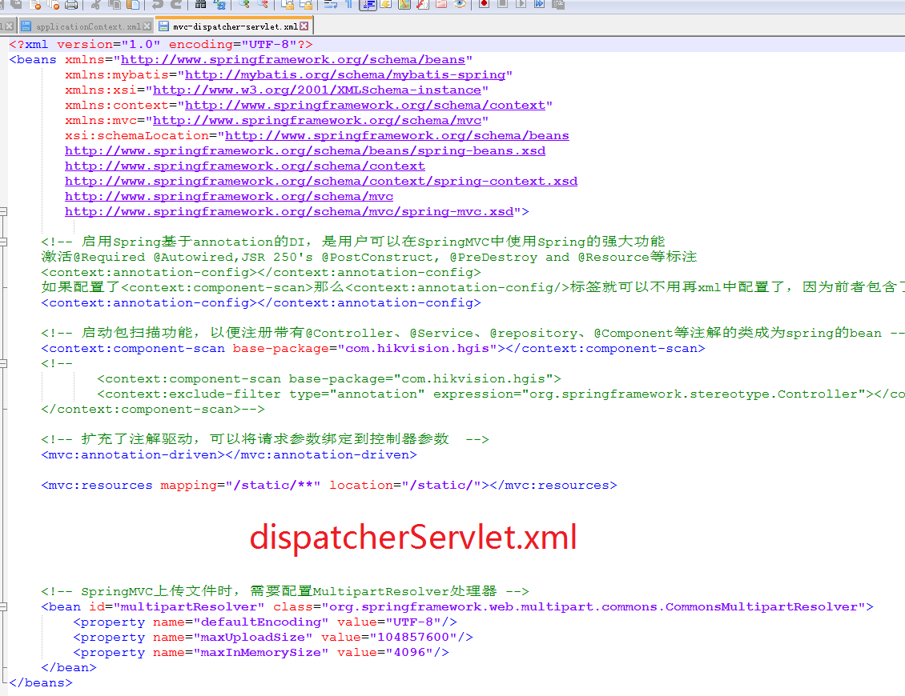
为什么要配置web.xml？
主要是因为我们程序运行在tomcat上，tomcat运行的第一步就会去读取web.xml文件 ，所以web.xml是web应用程序的入口
那么SpringBoot是如何省去这个web.xml，但是程序启动能完成web.xml要干的事情呢？
Spring官网上对DispatchServlet的如何初始化有如下文档
https://docs.spring.io/spring/docs/current/spring-framework-reference/web.html#mvc-servlet
Spring MVC, as many other web frameworks, is designed around the front controller pattern where a central Servlet, the DispatcherServlet, provides a shared algorithm for request processing, while actual work is performed by configurable delegate components. This model is flexible and supports diverse workflows.
The DispatcherServlet, as any Servlet, needs to be declared and mapped according to the Servlet specification by using Java configuration or in web.xml. In turn, the DispatcherServlet uses Spring configuration to discover the delegate components it needs for request mapping, view resolution, exception handling, and more.
The following example of the Java configuration registers and initializes the DispatcherServlet, which is auto-detected by the Servlet container (see Servlet Config):
图中配置servlet其实是spring5的配置方法,这种方式比较简单
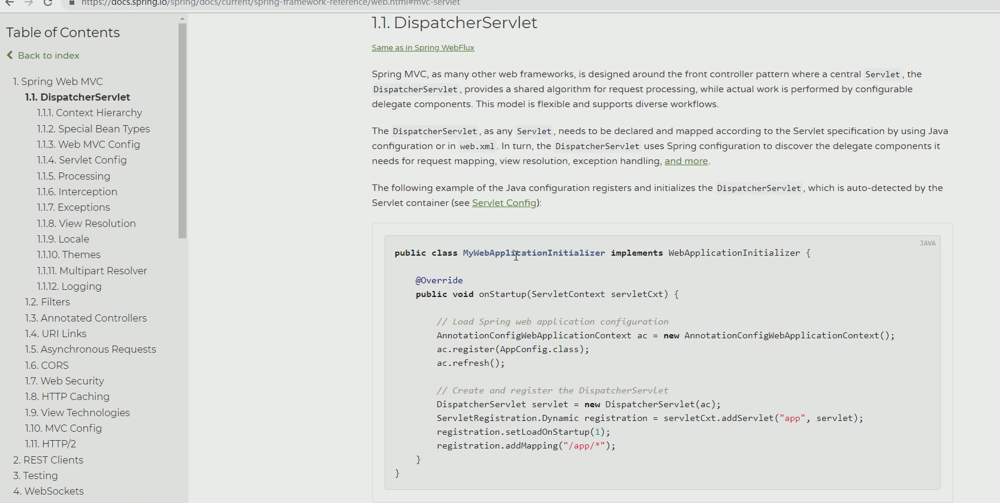
Spring3或者2.5的时候是使用web.xml配置的
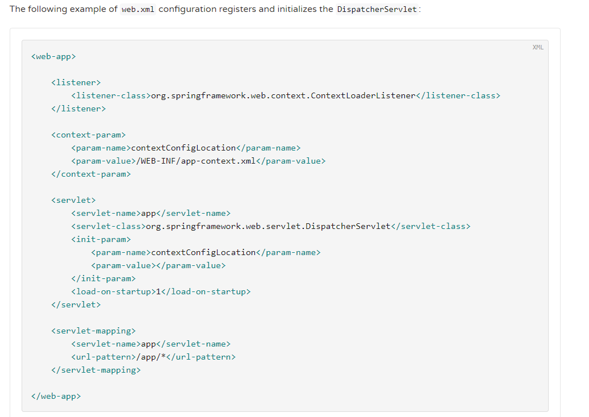
我们采用java代码的方式
所以我们可以使用下面三行代码将applicationContext.xml配置的工作干了
建一个不是webapp的项目，我用的是maven-archetype-quickstart项目
引入spring context和spring webmvc
<dependency>
<groupId>org.springframework</groupId>
<artifactId>spring-context</artifactId>
<version>5.0.6.RELEASE</version>
</dependency>
<dependency>
<groupId>org.springframework</groupId>
<artifactId>spring-webmvc</artifactId>
<version>5.0.9.RELEASE</version>
</dependency>
<dependency>
<groupId>javax.servlet</groupId>
<artifactId>javax.servlet-api</artifactId>
<version>3.1.0</version>
<scope>provided</scope>
</dependency>
然后写一个类就按图上那样,继承WebApplicationInitializer
// Load Spring web application configuration 加载Spring web应用程序的配置 所以下面三行代码就是完成了原来SpringMVC的加载applicationContext.xml的配置的工作
AnnotationConfigWebApplicationContext ac = new AnnotationConfigWebApplicationContext();
ac.register(App.class);//这个App.java配置了扫描什么包 相当于就是原来<context:component-scan base-package="com.hikvision.hgis"></context:component-scan>
ac.refresh();
记住这个WebApplicationInitializer
那么dispatchServlet如何注册和配置呢？
有四种方法
- 配置在web.xml 中让tomcat读取运行
- @WebServlet 注解
- 自己new一个Servlet
- servlet3.0的新特性，在servletContext上add一个servlet即可
SpringBoot采用第四种方法
package org.rico.learnSpringBoot;
import org.rico.learnSpringBoot.config.AppConfig;
import org.springframework.web.WebApplicationInitializer;
import org.springframework.web.context.support.AnnotationConfigWebApplicationContext;
import org.springframework.web.servlet.DispatcherServlet;
import javax.servlet.ServletException;
import javax.servlet.ServletRegistration;
/**
* Created by Rico on 2019/1/8.
* 这个webapplicationinitializer很重要,这个接口是Spring的接口
*/
public class MyWebApplicationInitializer implements WebApplicationInitializer {
@Override
public void onStartup(javax.servlet.ServletContext servletContext) throws ServletException {
// Load Spring web application configuration 加载Spring web应用程序的配置 所以下面三行代码就是完成了原来SpringMVC的加载applicationContext.xml的配置的工作
AnnotationConfigWebApplicationContext ac = new AnnotationConfigWebApplicationContext();
ac.register(AppConfig.class);//这个App.java配置了扫描什么包 相当于就是原来<context:component-scan base-package="com.hikvision.hgis"></context:component-scan>
ac.refresh();
// Create and register the DispatcherServlet 创建和注册dispatchServlet
DispatcherServlet servlet = new DispatcherServlet(ac);
//把一个servlet注册给tomcat
System.out.println("Spring通过配置META-INF/services/javax.servlet.ServletContainerInitializer文件配置了org.rico.learnSpringBoot.servlet.TheServletInitializer这个类,而这个类实现了ServletContainerInitializer接口,从而可以被tomcat自动加载这个servlet,然后这个类会自动扫描所有实现了Spring的WebApplicationInitializer接口的类,然后调用它们的onStartup方法");
System.out.println("我就是通过实现WebApplicationInitializer接口，然后被Spring扫描到,通过add这个servlet到暴露的servletContext中从而得以被tomcat执行");
ServletRegistration.Dynamic registration = servletContext.addServlet("app", servlet);
//启动时加载
registration.setLoadOnStartup(1);
//dispatchservlet的访问路径
registration.addMapping("*.do");
}
}
所以现在web.xml的活都干完了，web.xml不需要了
内嵌tomcat
原生的springboot-starter-web内部依赖了一个spring-boot-starter-tomcat，里面有tomcat的三个jar包
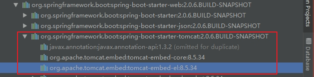
<!--内嵌tomcat-->
<dependency>
<groupId>org.apache.tomcat.embed</groupId>
<artifactId>tomcat-embed-core</artifactId>
<version>8.5.5</version>
</dependency>
<dependency>
<groupId>org.apache.tomcat.embed</groupId>
<artifactId>tomcat-embed-el</artifactId>
<version>8.5.5</version>
</dependency>
<dependency>
<groupId>org.apache.tomcat.embed</groupId>
<artifactId>tomcat-embed-jasper</artifactId>
<version>8.5.5</version>
</dependency>
tomcat也是java开发的
e;
/**
* Created by Rico on 2019/1/8.
*/
public class MySpringBootApplication {
//启动tomcat
public static void run(){
Tomcat tomcat=new Tomcat();//SpringBoot底层就是这么做的
tomcat.setPort(9090);
try {
//设置你要发布的项目
String sourcePath=MySpringBootApplication.class.getResource("/").getPath();//拿到的其实是target的目录
System.out.println("sourcePath:"+sourcePath);
//告诉tomcat你的代码在哪里
//告诉tomcat你webapp的目录是那个目录
Context ctx=tomcat.addWebapp("/",new File("src/main/webapp").getAbsolutePath());//我们SpringBoot没有webapp,所以这个地址可以随便写,但是主要是为了获得这个context
//Context ctx=tomcat.addWebapp("/mySpringBoot",new File("src/main/webapp").getAbsolutePath());//这种写法在用浏览器进行url访问的时候比上面多了一个应用路径
System.out.println(new File("src/main/webapp").getAbsoluteFile());
//告诉tomcat你的classess文件在哪
WebResourceRoot resources=new StandardRoot(ctx);
resources.addPreResources(new DirResourceSet(resources,"/WEB-INF/classes",sourcePath,"/"));
ctx.setResources(resources);
tomcat.start();
tomcat.getServer().await();
} catch (LifecycleException e) {
e.printStackTrace();
} catch (ServletException e) {
e.printStackTrace();
}
}
}
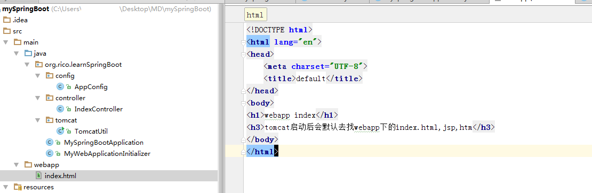
访问默认页效果
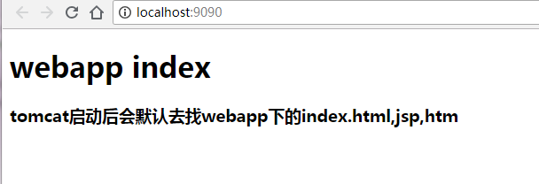
说明内置的tomcat起效果了。
现在tomcat可以启动了，但是
如何让tomcat在启动的时候去执行我们上面通过继承WebApplicationInitializer类而覆盖的onStartup方法呢?
上面的那个WebApplicationInitializer类是Spring的接口,tomcat怎么知道要去执行这个onStartup
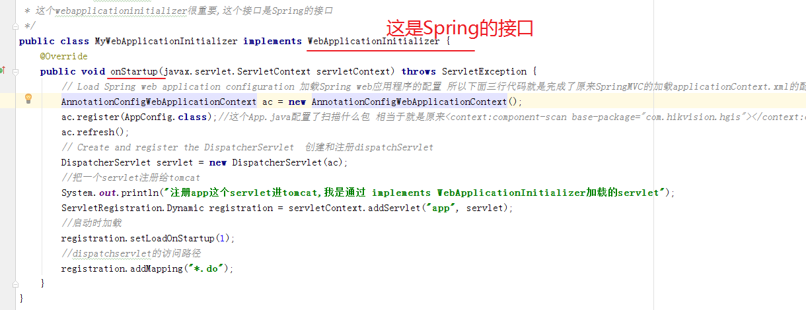
那么接下来我们就来说一下,
原来啊，servlet3.0有这么一个规范，
只要classes下有个META-INF/services下面有个javax.servlet.ServletContainerInitializer文件,这个文件名不能改 必须是这个名字，路径也一样不能修改，然后在这个文件中写上需要加载的servlet的java类的全限定名，就会去加载这个servlet,这是一个规范，一个规则
然后tomcat会执行，依次调用onstartup方法
所以说这种方式就能够进行模块化开发了 ，比那个注解的方式要好
因为一个模块可以有一个/META-INF/services/javax.servlet.ServletContainerInitializer文件 ,如果要加一个servelt，引一个jar包即可，如果要减一个servlet，pom移除一个jar包即可 ，SpringBoot就是这么做的，所以可以零配置
假设我们也这么做
我在resources文件夹下建立如上目录,然后建立javax.servlet.ServletContainerInitializer文件，填入servlet的初始器
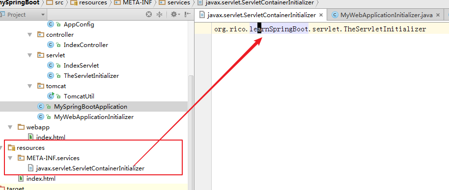
其中TheServletInitializer.java
//ServletContainerInitializer 这个接口是Servlet的接口 不是Spring的
public class TheServletInitializer implements ServletContainerInitializer {
@Override
public void onStartup(Set<Class<?>> set, ServletContext servletContext) throws ServletException {
System.out.println("我是servletinitializer,tomcat已经知道要加载servlet了,我是通过配置META-INF/services/javax.servlet.ServletConatinerInitializer文件加载进来的servlet");
ServletRegistration.Dynamic registration=servletContext.addServlet("secondservlet",new SecondServlet());
System.out.println("secondservlet正在被tomcat加载");
registration.addMapping("/secondservlet");
}
}
SecondServlet.java
//@WebServlet("/secondservlet") 我们没用这种方式 使用的是servletContext.addServlet
public class SecondServlet extends HttpServlet{
@Override
protected void doGet(HttpServletRequest req, HttpServletResponse resp) throws ServletException, IOException {
System.out.println("secondservlet get");
}
}
这样servlet就会被tomcat执行加载 ，我这里为了图方便是在同一个项目里这么做的(所以有2个servlet被tomcat加载了),如果在一个项目中单独这么干，它这个servlet就可以被tomcat进行加载 ,这个项目就可以单独打成一个jar包，做成可插拔的servlet。
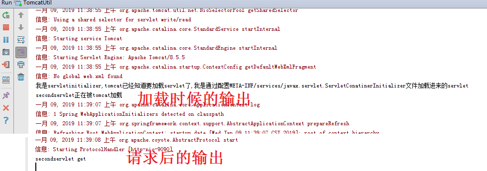
所以说
SpringMVC中就是这么干的如下图
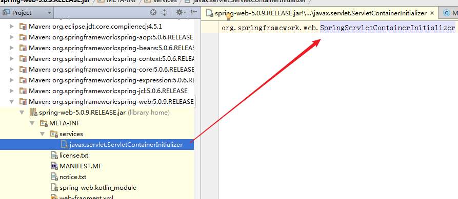
它配置了这个 org.springframework.web.SpringServletContainerInitializer类(这个类实现了ServletContainerInitializer接口，这个接口是servlet的)，然后tomcat就会加载这个Servlet 了
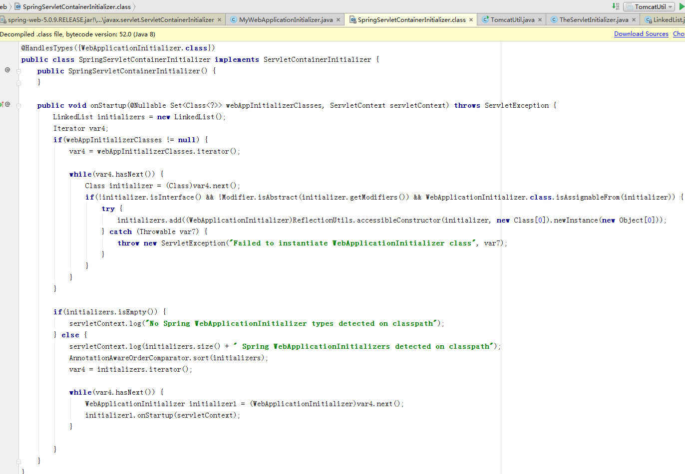
而这个Servlet会扫描所有实现了WebApplicationInitializer(该接口是Spring)的类，然后依次去调用onStartup方法 ，就比如下图，我们的org.rico.learnSpringBoot.MyWebApplicationInitializer这个类实现了 WebApplicationInitializer,而这个onStartup方法提供了一个servletContext,我们可以往里面add我们自己的servlet，所以tomcat也会加载它 ，这就是tomcat为何会加载我们自己写的servlet的原因了
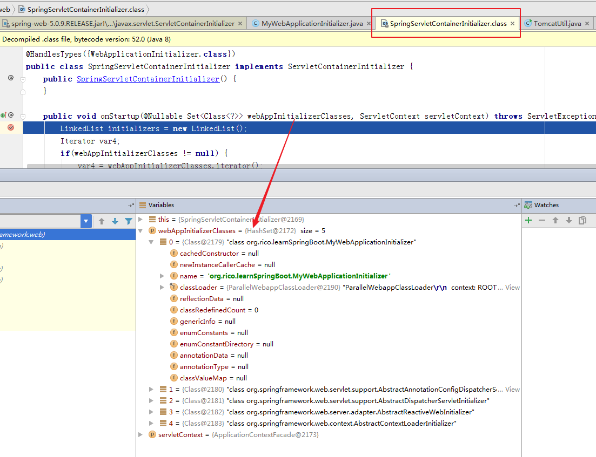
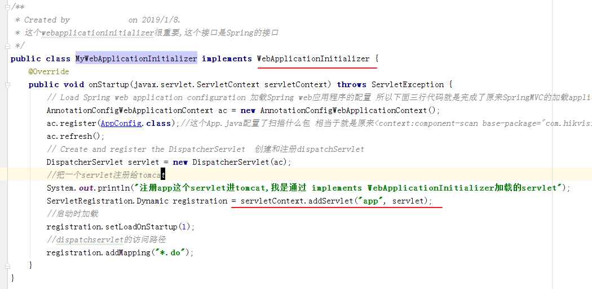
接下来模拟静态资源的访问
就是访问static文件夹下面的对象原样访问
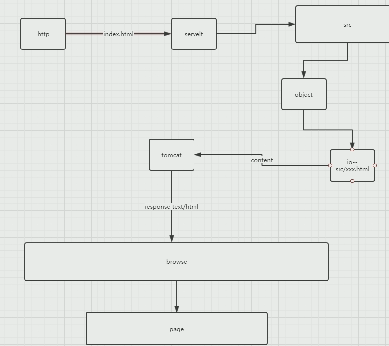
其他
IDEA
shift+F6 改名字
总结
记住一个接口，ServletContainerInitializer这是Servlet的
再记住一个接口 ，WebApplicationInitializer 这是Spring的接口
自己实现一个SpringBoot
目录结构
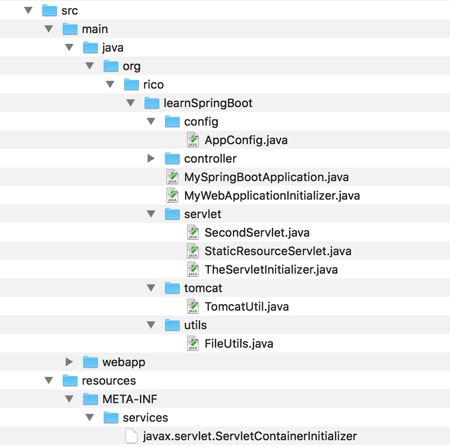
源码 待上传github
This blog is under a CC BY-NC-SA 3.0 Unported License
本文链接：http://hogwartsrico.github.io/2019/01/08/how-springboot-achieves-zero-configuration/